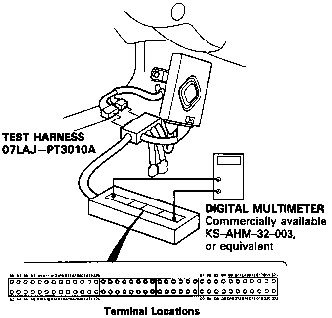

Using Digital Multimeter (KS-AHM-32-003)
DIAGNOSTIC TROUBLE CODE DETECTING USING DIGITAL MULTIMETER
Remove the left side kick panel on the drivers side. Connect the wire harness to the Test Harness, and/or connect the Test Harness to the Transmission Control Module (TCM) according to the troubleshooting flowchart
NOTE:
- Only the A and D terminals of the Test Harness are used for A/T troubleshooting.
- Unless otherwise noted, use only the Digital Multimeter, commercially available or KS-AHM-32003, for testing.